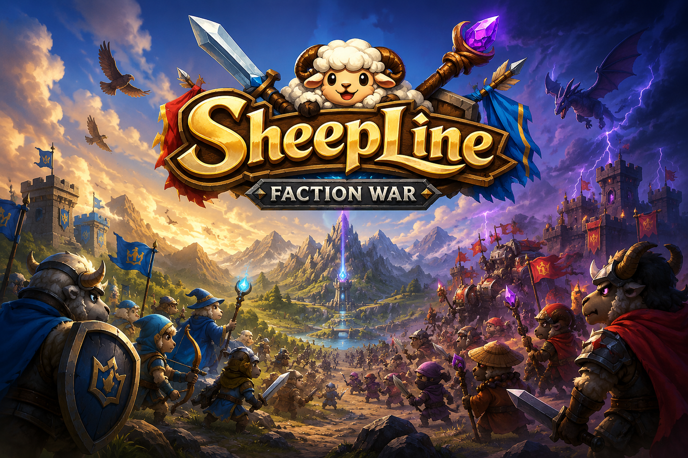
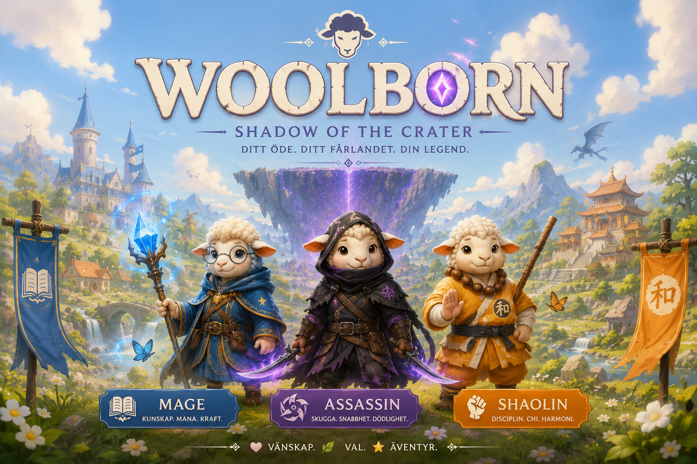
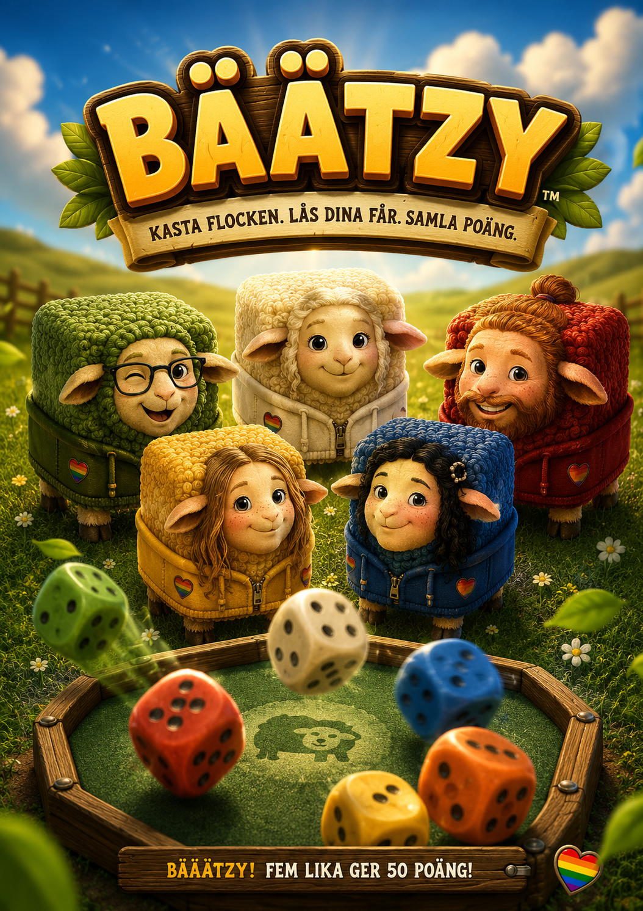

Spel
Här hittar du små spel med Gotland-, får- och lägerkänsla. Klarar du utmaningarna?
Fly från hagen
Välj ett får, samla saker och försök fly från hagen.

SheepLine
Bygg får-armén, försvara vägen och stoppa vargfåren.

Woolborn
Välj din väg som Assassin, Mage eller Shaolin och upptäck kraterns hemlighet.

Bäätzy!
Kasta flocken och hoppas på lite tur med får!